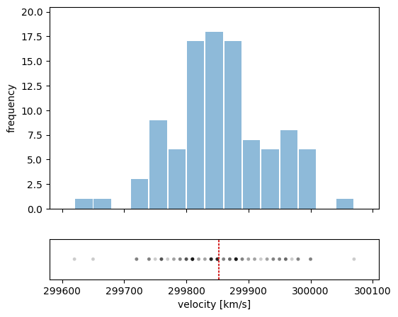

from mdsdata import DS1
X, y = DS1.load_data(return_X_y=True)
print(f"X has {X.shape[0]} rows and {X.shape[1]} columns.")X has 150 rows and 4 columns.This jupyter notebook is part of the supplementary material for the book “Materials Data Science” (Stefan Sandfeld, Springer, 2024, DOI 10.1007/978-3-031-46565-9). For further details please refer to the accompanying webpage at https://mds-book.org.
from mdsdata import DS1
X, y = DS1.load_data(return_X_y=True)
print(f"X has {X.shape[0]} rows and {X.shape[1]} columns.")X has 150 rows and 4 columns.# By only considering one variable, the other three “dimensions” are ignored, effectively
# projecting all data on the first variable.
X1 = X[:, 0]
X2 = X[:, 1]
X1.shape(150,)which shows that X1 is a vector with 150 records. We can now compute, e.g. the mean of the first and the second variable:
import numpy as np
mean_X1 = np.mean(X1)
mean_X2 = np.mean(X2)
print("mean of X1:", mean_X1)
print("mean of X2:", mean_X2)mean of X1: 5.843333333333334
mean of X2: 3.0540000000000003fig, ax = plt.subplots(nrows=2, gridspec_kw={'height_ratios': [1, 0.2], 'hspace': 0.25}, figsize=(6, 5), sharex=True)
ax[0].set(ylabel='frequency', ylim=(0, 20.5))
ax[0].hist(velocity, color='C0', alpha=0.5, bins=15, rwidth=0.93)
ax[1].scatter(velocity, np.zeros_like(velocity), alpha=0.2, s=12, edgecolors='none', color='k')
ax[1].set(yticks=[], xlabel='velocity [km/s]', xlim=(299580, 300110))
ax[1].axvline(velocity.mean(), color='C3', linewidth=1.5, dashes=(1.5, 0.8))
mean: 299852.4
median: 299850.0Summary (or descriptive) statistics can be most easily obtained using pandasas follows:
| sepal length | sepal width | petal length | petal width | target | |
|---|---|---|---|---|---|
| 0 | 5.1 | 3.5 | 1.4 | 0.2 | 0 |
| 1 | 4.9 | 3.0 | 1.4 | 0.2 | 0 |
| 2 | 4.7 | 3.2 | 1.3 | 0.2 | 0 |
| 3 | 4.6 | 3.1 | 1.5 | 0.2 | 0 |
| 4 | 5.0 | 3.6 | 1.4 | 0.2 | 0 |
| ... | ... | ... | ... | ... | ... |
| 145 | 6.7 | 3.0 | 5.2 | 2.3 | 2 |
| 146 | 6.3 | 2.5 | 5.0 | 1.9 | 2 |
| 147 | 6.5 | 3.0 | 5.2 | 2.0 | 2 |
| 148 | 6.2 | 3.4 | 5.4 | 2.3 | 2 |
| 149 | 5.9 | 3.0 | 5.1 | 1.8 | 2 |
150 rows × 5 columns
| sepal length | sepal width | petal length | petal width | target | |
|---|---|---|---|---|---|
| count | 150.000000 | 150.000000 | 150.000000 | 150.000000 | 150.000000 |
| mean | 5.843333 | 3.054000 | 3.758667 | 1.198667 | 1.000000 |
| std | 0.828066 | 0.433594 | 1.764420 | 0.763161 | 0.819232 |
| min | 4.300000 | 2.000000 | 1.000000 | 0.100000 | 0.000000 |
| 25% | 5.100000 | 2.800000 | 1.600000 | 0.300000 | 0.000000 |
| 50% | 5.800000 | 3.000000 | 4.350000 | 1.300000 | 1.000000 |
| 75% | 6.400000 | 3.300000 | 5.100000 | 1.800000 | 2.000000 |
| max | 7.900000 | 4.400000 | 6.900000 | 2.500000 | 2.000000 |
If you want to stick with numpy and scipy (and no pandas) then here is another option:
from scipy import stats
from mdsdata import DS1
X, y = DS1.load_data(return_X_y=True)
for col in X.T:
print(stats.describe(col))DescribeResult(nobs=150, minmax=(4.3, 7.9), mean=5.843333333333334, variance=0.6856935123042507, skewness=0.3117530585022963, kurtosis=-0.5735679489249765)
DescribeResult(nobs=150, minmax=(2.0, 4.4), mean=3.0540000000000003, variance=0.1880040268456376, skewness=0.330702812773315, kurtosis=0.24144329938318343)
DescribeResult(nobs=150, minmax=(1.0, 6.9), mean=3.758666666666666, variance=3.1131794183445196, skewness=-0.2717119501716388, kurtosis=-1.3953593021397128)
DescribeResult(nobs=150, minmax=(0.1, 2.5), mean=1.1986666666666668, variance=0.582414317673378, skewness=-0.10394366626751729, kurtosis=-1.3352456441311857)